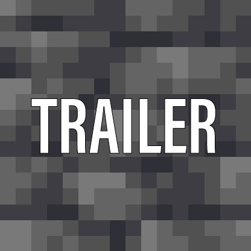
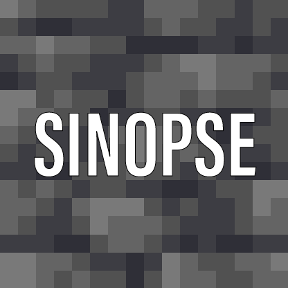
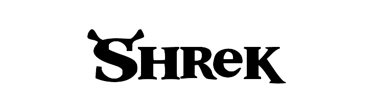
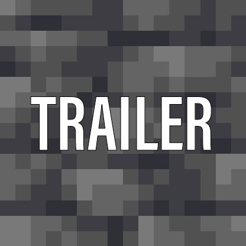
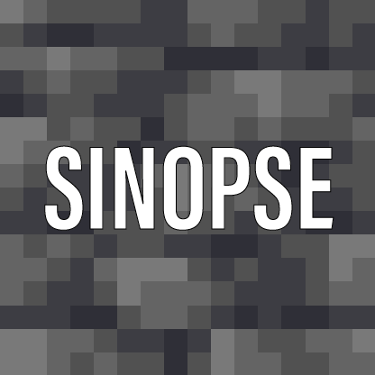
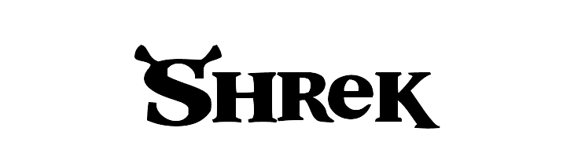
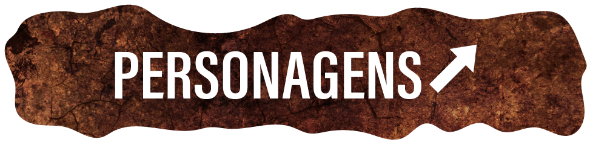
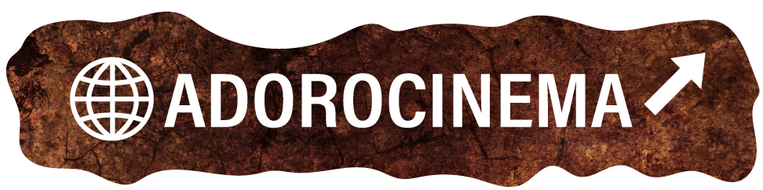

Em um pântano distante vive Shrek, um ogro solitário que vê, sem mais nem menos, sua vida ser invadida por uma série de personagens de contos de fada, como três ratos cegos, um grande e malvado lobo e ainda três porcos que não têm um lugar onde morar. Todos eles foram expulsos de seus lares pelo maligno Lorde Farquaad. Determinado a recuperar a tranquilidade de antes, Shrek resolve encontrar Farquaad e com ele faz um acordo: todos os personagens poderão retornar aos seus lares se ele e seu amigo Burro resgatarem uma bela princesa, que é prisioneira de um dragão. Porém, quando Shrek e o Burro enfim conseguem resgatar a princesa logo eles descobrem que seus problemas estão apenas começando.
O filme "Shrek" de 2001 foi dirigido por Andrew Adamson e Vicky Jenson. Vicky Jenson é conhecida por seu trabalho em animação e co-dirigiu "O Espanta Tubarões" (2004) depois de dirigir "Shrek". Andrew Adamson também dirigiu "Shrek 2" (2004) e co-dirigiu "Shrek Terceiro" (2007). Ele também dirigiu os filmes da série "As Crônicas de Nárnia: O Leão, a Feiticeira e o Guarda-Roupa" (2005) e "As Crônicas de Nárnia: Príncipe Caspian" (2008).
 
.